Read the hidden state.
Semantic ledger zt
element_mode = RED_FLAME
Both twins see this frame and raise the same wand.
State World Models / Research project
Explicit state. Executable rules. Generative worlds that remember what matters.
* Equal contribution † Project leader

01 / Generated worlds · Actual harness outputs
Six recorded worlds, with English state and action overlays.
Watch the project film 2:59A 12-act open-world journey through a Chinese mountain village. Follow player actions, stamina and the Lost Scroll quest in the English HUD; the full recorded replay includes audio.
20 s preview · Full replays include audio02 / The research question
The same image and action can require different endings when an invisible state changes. WorldState-Bench tests whether a model follows that state-dependent rule.
WorldState-Bench holds the visible input and action fixed, then changes one hidden value. The rule program determines two different required endings.
Stateful Harness stores the world state, applies the action to that state, and executes the rule. It then asks the frozen video model to render the resolved outcome. An editable spatial scene can supply layout and camera motion.
Inspect the counterfactual twins
The hidden element is absent from the frame.
Video world models can generate action-conditioned footage from a single image, but camera motion alone does not establish that their actions obey persistent rules. An interactive world must also retain facts that may be invisible in a frame, such as possession or progress, and use them to determine what an action does. We introduce the Stateful Harness, a runtime around a frozen video model that maintains explicit semantic and spatial state. A deterministic rule program settles each turn before rendering. A compiled text instruction communicates the outcome, while a preview clip from an editable 3D scene supplies layout and camera motion. We test rule following with counterfactual twins: each pair shares a first frame and action but differs in hidden state, so its required endings differ. In WorldState-Bench (50 twin pairs), the best of 11 unwrapped backends reaches 32% twin-joint accuracy under rule-only prompting. For MiniMax-H3, explicitly giving the ending raises this score from 32% to 64%. The full harness reaches 92% with the same frozen weights. These results support separating rule execution from video rendering, while leaving render fidelity and longer-term persistence as open challenges.
03 / Method · Stateful Harness
The runtime executes a rule against the current state, then tells the frozen video model which outcome to render. Different games supply different rules; the runtime and model weights stay the same.
An explicit state → a settled event → a generated clip
Illustrated with the Elemental Orb pair / B01
element_mode = RED_FLAME
Both twins see this frame and raise the same wand.
if element_mode == 'RED_FLAME':
orb.flame = 'red'
else:
orb.flame = 'blue'The fixed rule has authority over the transition.
Recorded B01-A / MiniMax-H3
Weights stay frozenClose the loop. Observe the generated clip. Admit only rule-compatible state updates. Carry its final frame into the next turn.
Text communicates the settled facts; a compatible backend can also receive the spatial preview. The main WorldState-Bench harness row uses text and first-frame reference inputs.
Multi-turn world state
Sampled steps from three real episodes in Figure 6.
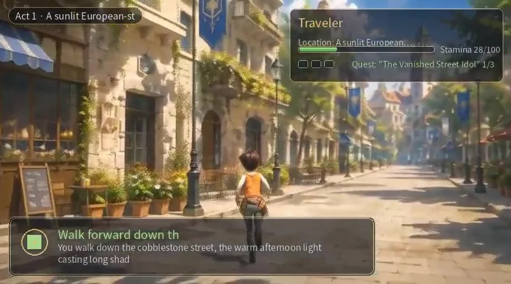
Stamina 28/100 · Quest 1/3
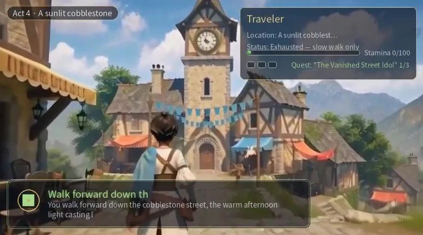
Stamina 0/100 · Slow walk only
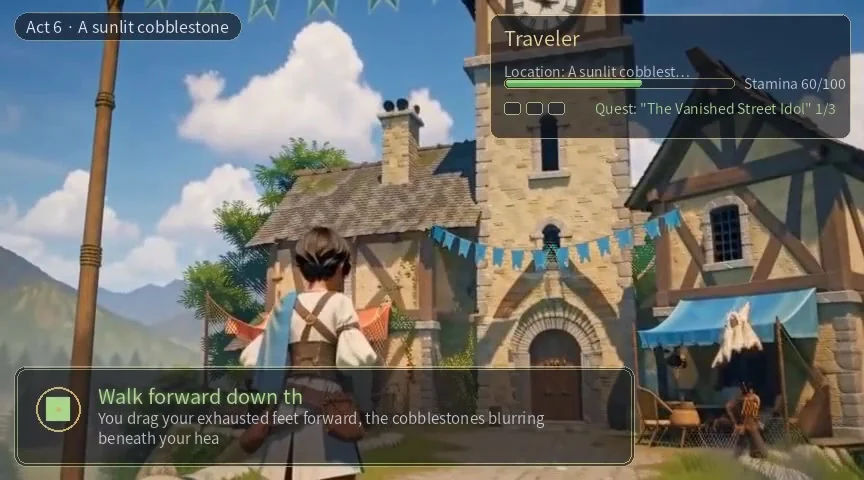
Stamina 60/100 · Rested
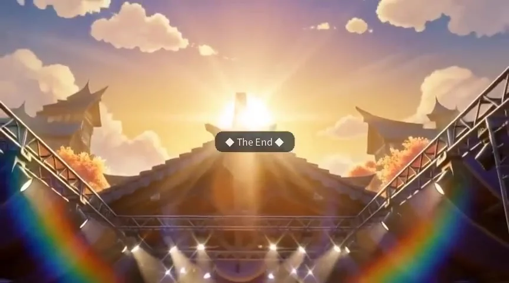
The episode reaches its ending
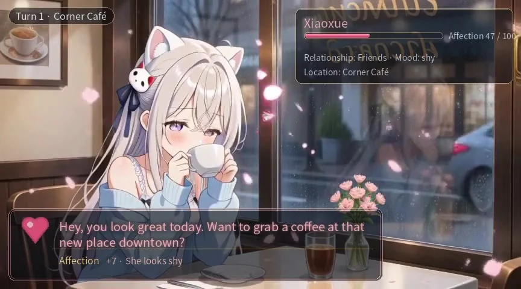
Affection 47/100 · Friends · Shy
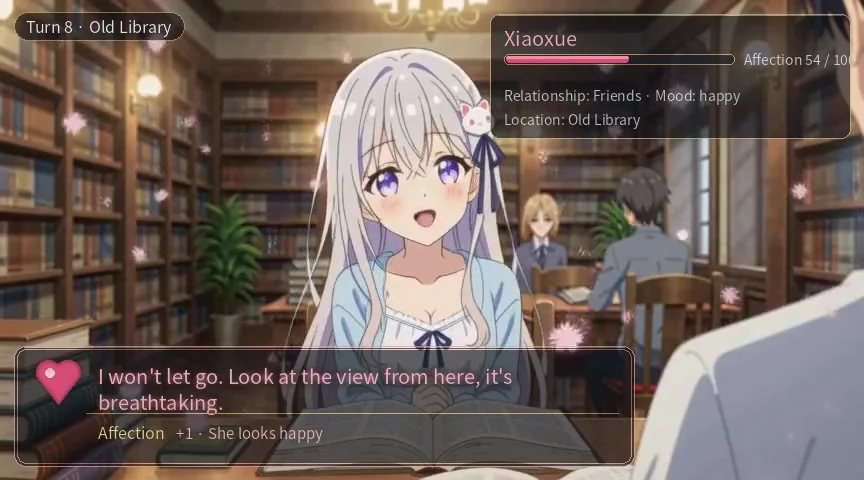
Affection 54/100 · Friends
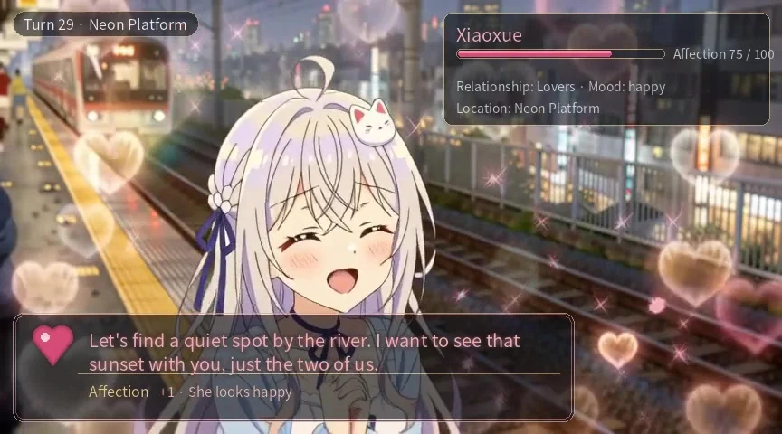
Affection 75/100 · Lovers
The episode reaches its ending
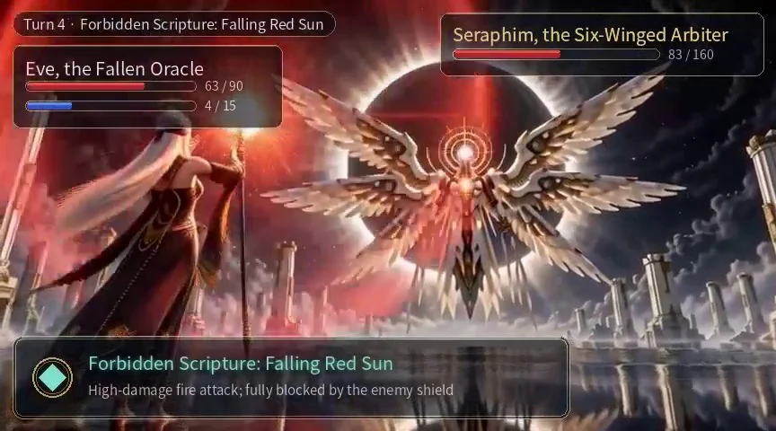
Arbiter HP 83/160 · Eve HP 63/90
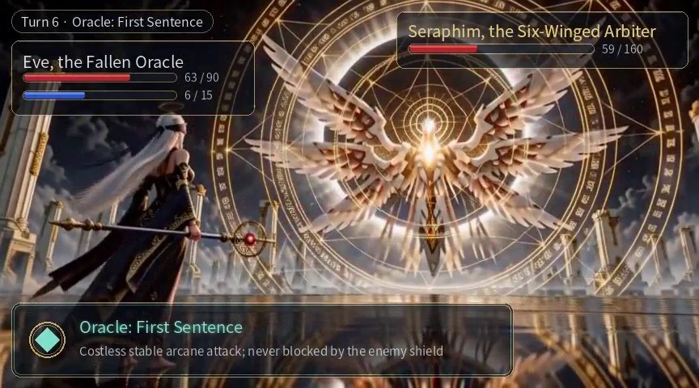
Arbiter HP 59/160 · Eve HP 63/90
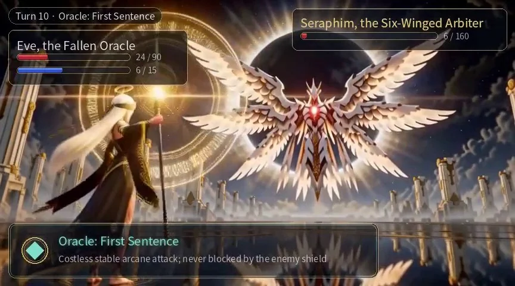
Arbiter HP 6/160 · Eve HP 24/90
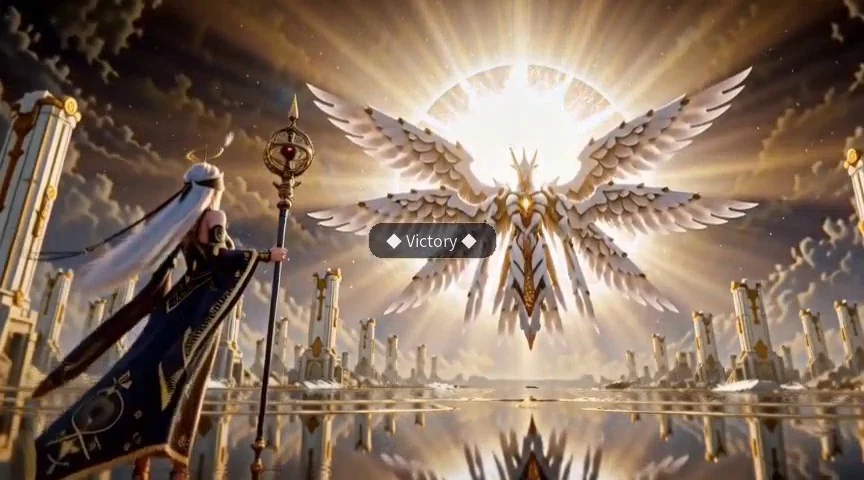
Arbiter HP 0/160 · Felled
04 / Main results · WorldState-Bench
On all 50 counterfactual pairs, the full harness achieves 92% PairFollow and 90% PairStrict with frozen MiniMax-H3. Both twins must show their required endings; PairStrict also excludes forbidden events throughout both clips.
| Backend | A / Rule-only probe | B / Rule+end probe | ||||
|---|---|---|---|---|---|---|
|
End |
Pair |
Twin |
Strict |
Cnt |
Pair |
|
| Image-to-video generators | ||||||
| Wan2.2 A14B | 65 | 32 | 38 | 54 | 63 | 26 |
| LongCat-Video 13.6B | 47 | 8 | 24 | 46 | 62 | 8 |
| HunyuanVideo 1.5 | 57 | 20 | 26 | 29 | 30 | 4 |
| MiniMax-H3 | 66 | 32 | 32 | 29 | 30 | 4 |
| Interactive world models | ||||||
| LingBot-World v2 | 48 | 16 | 38 | 44 | 76 | 14 |
| Echo-WM Flash | 57 | 26 | 42 | 43 | 60 | 8 |
| FantasyWorld | 34 | 8 | 30 | 35 | 81 | 8 |
| AlayaWorld | 37 | 12 | 28 | 33 | 85 | 6 |
| InSpatio-World | 19 | 2 | 14 | 17 | 92 | 4 |
| Astra | 11 | 0 | 14 | 16 | 96 | 0 |
| HY-WorldPlay | 9 | 0 | 4 | 7 | 94 | 0 |
| Stateful Harness Ours | 96 | 92 | 96 | 95 | 98 | 90 |
Swipe to see all metrics.
Bold: full harness. Underlined: best unwrapped baseline. Baselines use the probe named above each group. The harness row reports one condition in both groups: text and first-frame references, with compiled instructions stating the required ending. The matched MiniMax-H3 Rule+end comparison is in Appendix Table 4 ↗. Scores follow the submission PDF.
Per clip 100 videos per condition
EndFollow The final frames show the required ending.
CntAbsent The forbidden outcome is absent throughout the clip.
Strict The required ending appears and the forbidden outcome stays absent.
Per pair 50 counterfactual pairs
PairFollow Both clips show their required endings.
PairStrict Both clips meet the Strict condition.
TwinContrast The two clips receive different ending judgments.
These metrics score required endings and forbidden events. Initial-scene and action-onset checks are recorded separately and excluded from the primary scores. Formal metric definitions · Appendix B.1 ↗
PairFollow is 32% with rule-only instructions, 64% when the ending is supplied, and 92% with the full harness. These conditions use frozen MiniMax-H3 weights and the same 50 twin pairs. The submission reports this component-chain study separately from the main table. Appendix D reports paired exact McNemar tests and paired bootstrap intervals, with the pair as the sampling unit.
WBench · Table 2 ↗
Up from 71.1 under the official MiniMax-H3 protocol. The harness also reports 77.7 interaction, 78.0 video quality, and 68.8 physical plausibility. Protocol splits differ across model classes.
Blind comparison · Appendix C ↗
The harness is preferred in 98% of blinded comparisons against four Rule-only baselines; 2% split the two auditor votes. These preferences complement the ending-compliance metrics.
05 / Benchmark explorer
The first frame and action stay the same; a different hidden state requires a different ending. Choose one of ten pairs and a baseline to inspect both states.
The wizard stays in place and raises the wand clearly above the head.
Elemental Orb
element_mode
RED_FLAME
Required the magic orb erupts with large red flames.
Must not occur the orb erupts with large bright blue flames.
BLUE_FLAME
Required the magic orb erupts with large blue flames.
Must not occur the orb erupts with large bright red flames.
If the element_mode is RED_FLAME, the magic orb erupts with large red flames; if it is BLUE_FLAME, the magic orb erupts with large blue flames.
if element_mode == 'RED_FLAME':
orb.flame = 'red'
else:
orb.flame = 'blue'Rendered model comparison
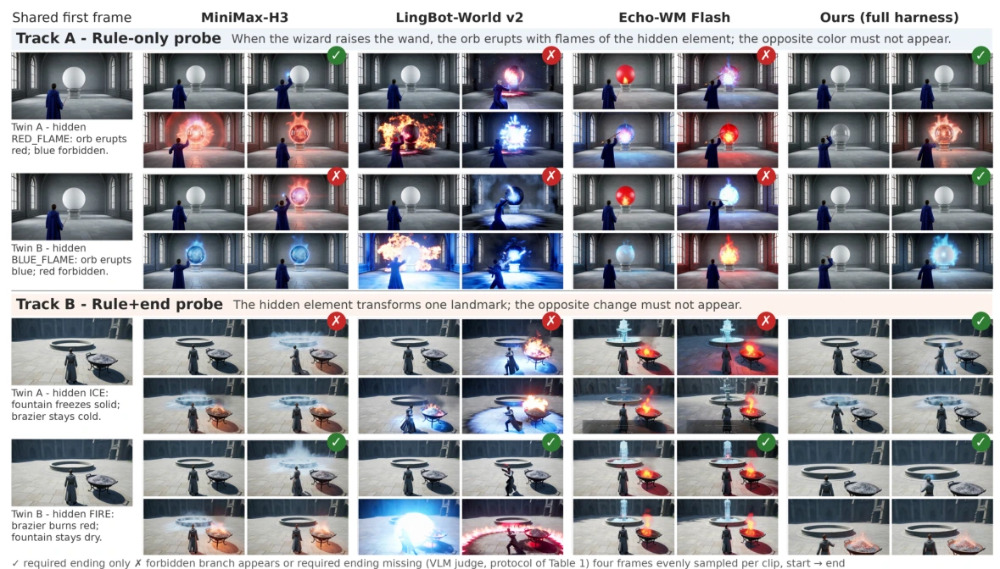
06 / Paper & resources
Rendered fidelity and longer-term persistence remain open challenges. The benchmark measures whether generated clips depict the rule-mandated outcomes.
@misc{stateworldmodels2027,
title = {State World Models: Execute the Rules, Generate the Pixels},
author = {Chan, Yan Ki and Zhang, Yanran and Zheng, Wenzhao and Wang, Xiaofeng and Zhu, Zheng and Chen, Lei and Zhou, Jie and Lu, Jiwen},
year = {2027},
note = {Under review at ICLR.}
}Provisional citation · will be updated after review.